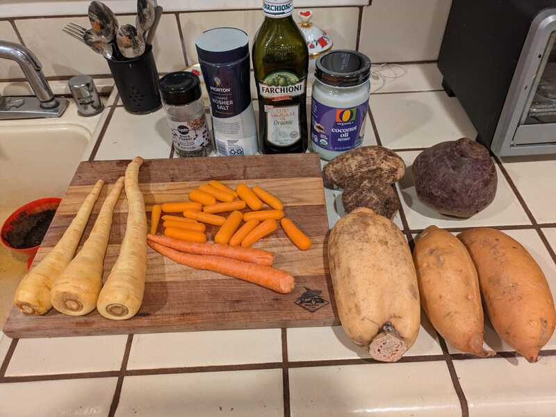
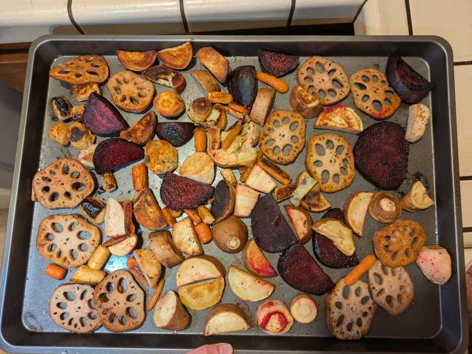

Roasted Root Vegetables
 
Summary
Prep time: 15 mins | Cook time: 25-35 mins | Servings: 4-6
Ingredients:
- 2 small sweet potatoes, peeled and cut into 1-inch cubes
- 1 bunch beets, peeled and cut into 1-inch cubes
- 4 carrots, peeled and cut into 1-inch rounds
- 3 parsnips, peeled and cut into 1-inch rounds
- 1⁄4 cup coconut oil, melted
- 1 tbsp extra-virgin olive oil
- 1 tbsp raw honey (or maple syrup)
- 1 tsp salt
- 1⁄2 tsp freshly ground black pepper
Instructions:
- Preheat the oven to 400°F. Line two rimmed baking sheets with parchment paper.
- In a large bowl, combine the sweet potatoes, beets, carrots, and parsnips. Add the coconut oil, olive oil, honey, salt, and pepper. Toss to coat the vegetables.
- Divide the vegetables between the two baking sheets, spreading them into a single layer.
- Bake for 10 to 15 minutes. Turn them so they brown on the other side. Continue to bake for 10 to 15 minutes more, or until brown and tender.
- Serve warm or at room temperature.
Alternative Approach
Just season the veggies with olive oil, salt, pepper. Make sure your veggies are dry before seasoning and the sizes you cut your veggies should be consistent because all these veggies have approximately the same cooking time. I think they are under-shooting the baking time - expect 40-60 minutes depending on the size you cut the veggies.
Tips:
- If the vegetables are brown but not quite cooked through, remove them from the oven. Cover the pans with aluminum foil and let the vegetables steam for about 10 minutes. The fresher the vegetables, the less time needed to roast them.
- Vegan: Use maple syrup instead of honey.
- Leftovers can be turned into Roasted Vegetable Soup.